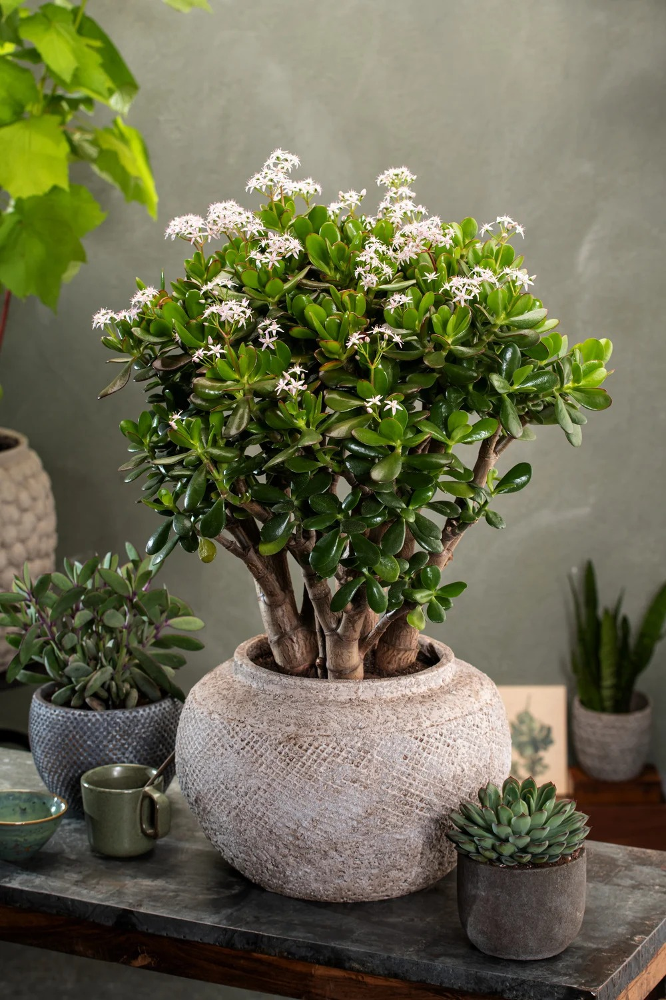

Crassula ovata

About Jade Plant
Crassula ovata, commonly known as the Jade Plant, is a popular succulent valued for its thick, glossy leaves and tree-like appearance. It’s often associated with good luck and prosperity and is known for its easy care and long lifespan.
Care Tips:
- Light: Prefers bright, indirect light; can handle some direct sunlight.
- Water: Allow the soil to dry out between waterings; water less in winter.
- Temperature: Best in temperatures between 65-75°F (18-24°C).
- Fertilizer: Feed with a balanced succulent fertilizer every 1-2 months during the growing season.